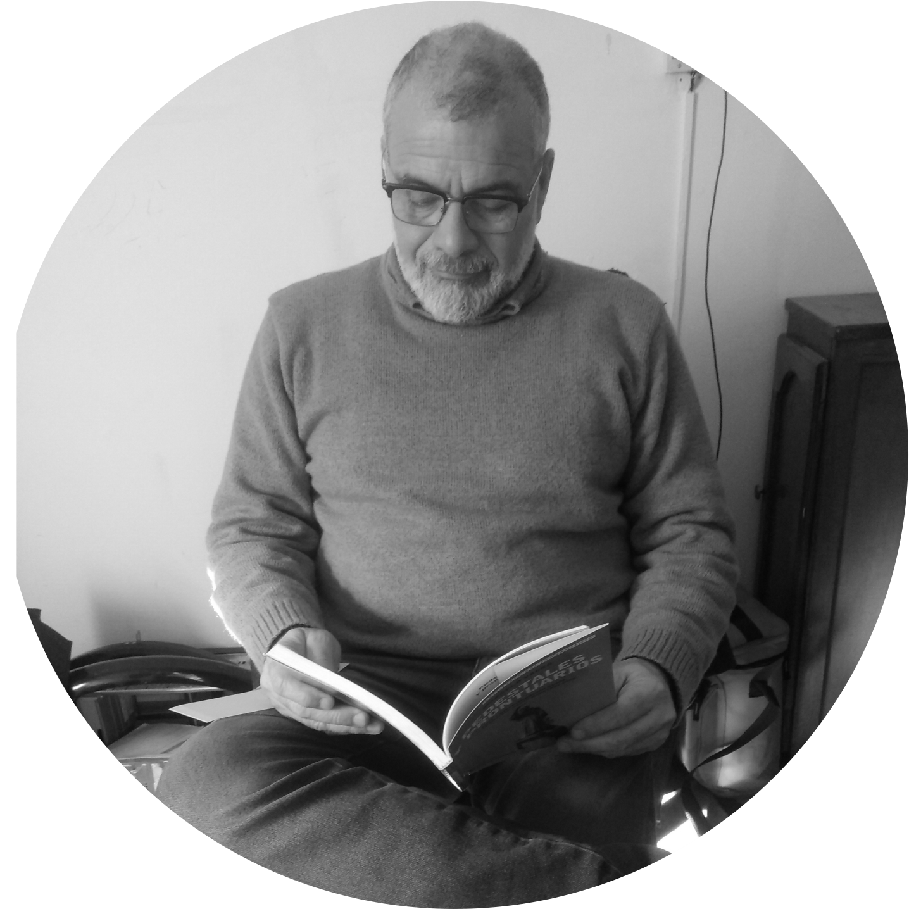
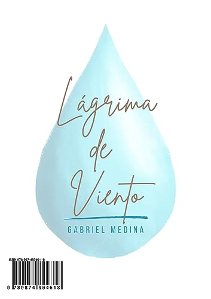
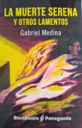
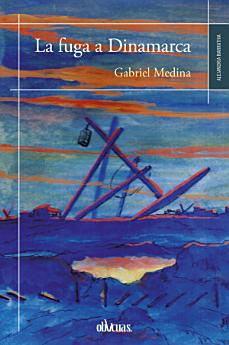
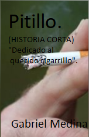

Gabriel Medina
Biografía
Me han puesto de nombre Gabriel Ángel y un sinnúmero de sobrenombres, también, llevo Medina como apellido; éste último significa ciudad del profeta y nada tiene que ver con mi personalidad, quizás la de algún ancestro, nunca se sabe. Nací en el año 1965, en Rosario, Santa Fe. Trabajé como docente de áreas técnicas y tecnología y siempre me desempeñé dentro de esa zona del conocimiento, la lectura de cuentos y novelas me ha acompañado desde la adolescencia, pero siempre en términos recreativos y exclusivamente como lector. Por otro lado viví en varias ciudades de la querida Argentina. El hecho es que, viviendo en La Plata, Provincia de Buenos Aires ya jubilado y extrañando la Patagonia de manera desmedida, pude comenzar a canalizar esa angustia que la añoranza provoca, a través de la escritura, que de manera inicial carecía de forma y no tenía definido un formato específico. Al darlo a leer a mis amigos y familiares les parecía fantástico (nunca supe a ciencia cierta si era por la calidad de la obra o la rareza que animal semejante fuera capaz de escribir más de dos palabras seguidas), pero lo cierto es que seguí escribiendo una obra que terminó como una pequeña nouvelle y en la que los personajes son mis amigos que ya no están con nosotros y los que me han marcado mucho y acompañado a lo largo de mi vida. La novela se llamaba La fugadización de Dinamarca y trataba de un pequeño pueblo costero de la Patagonia cuyos habitantes vivían de la extracción del petróleo, pero el preciado elemento se agota en la zona y deben definir un nuevo rumbo a seguir. Erráticamente se enteran de que en Dinamarca la gente se suicida presuntamente por la falta de estímulos en sus vidas y deciden emprender un viaje para iluminar y salvar a los pobres dinamarqueses. Obviamente toda la historia ronda en base a un humor absurdo, relatado mediante giros costumbristas de la zona. La propuesta de publicarla vino de una editorial de Barcelona (Ediciones Oblicuas), la que sugirió cambiar el nombre a “La fuga a Dinamarca” ya que fugadización no es una palabra de uso castellano, a lo cual accedí y terminó con un título que poco tiene que ver con el contenido del libro y publicado en un país donde nadie lo promociona: en síntesis una sumatoria de errores. También está como EBOOK en Amazon. Luego continué escribiendo cuentos no muy extensos y participando de los distintos concursos literarios que se dan a nivel internacional, fue así como en el 2018 obtuve el Accésit de Relato Breve correspondiente al “V Certamen de Poesía y Relato Breve Fundación Rey Ardid.” Me jubilaron laboralmente por problemas de salud que en gran medida se relacionan con el tabaco, así que a modo de venganza hice un pequeño relato sobre las consecuencias del hábito de fumar y obtuve un premio con ella, se llama “Pitillo” y tiene poco más de una carilla de extensión. En el mismo camino salió otro cuento un poco más extenso, que se llama “Homoerectus” y fue seleccionado en el certamen y antología “Los libros de Charlie”, publicado por Editorial PAINE – 2018 - San Luis, Argentina. Versa sobre unas extrañas muertes que se suceden y de la cual no existe explicación terrenal, el cuento tenía final abierto. Del mismo recibí muchas críticas respecto de la forma en que concluía y de ahí surgió la idea de continuarlo y terminó en una saga de tres cuentos consecutivos que dan lugar a “La muerte serena”. Este se publicó en una editorial de Trelew, Remitente Patagonia, y salió a la venta dentro del contexto de la pandemia del COVID 19, de manera muy oportuna. En medio de la cuarentena seguí tratando de difundir este libro, que se compone de seis cuentos, todos tienen en común la temática de la muerte e intentan una reflexión acerca del destino de la vida y el más allá de la misma. En este 2023 estoy presentando en diferentes lugares y en la feria del libro mi última obra "Lágrima de viento" poemario, desde ya los invito a conocerlo
En este 2024 salieron dos fanzines, Triplete, con Antilipi, Olivares y Cerezo, y Tiempo en el tiempo, con Huayquilaf y Cerezo. Además vió la luz una compilación de cuentos en coautoria con Alba Magariños intitulada "Pócimas para un conjuro"."*1
Gabriel Medina, 2024 Trelew Provincia del Chubut. Argentina
*1 https://www.escritores.org/libros/index.php/item/gabriel-medina
.
Biography
"My name is Gabriel Ángel, but I've been given countless nicknames. I also carry the surname Medina; this last name means 'city of the prophet,' though it has nothing to do with my personality—perhaps some ancestor's. I was born in 1965 in Rosario, Santa Fe. I worked as a teacher in technical and technology fields, always within that realm of knowledge. Reading stories and novels has been a companion since adolescence, purely for recreation and solely as a reader.
On another note, I've lived in various cities across beloved Argentina. The thing is, while living in La Plata, Buenos Aires Province, already retired and missing Patagonia immeasurably, I started channeling the anguish of that longing into writing. Initially, it lacked form and a specific format. Upon sharing it with friends and family, they found it fantastic (I never knew for sure if it was due to the quality of the work or the peculiarity that a creature like me could write more than two consecutive words). But the truth is, I continued writing a work that ended up as a short novella. The characters are my late friends and those who've had a significant impact on my life. The novel was titled 'La fugadización de Dinamarca' and revolved around a small coastal town in Patagonia whose inhabitants depended on oil extraction. However, the precious resource was depleting, and they needed to chart a new course. Haphazardly, they learn that people in Denmark are supposedly committing suicide due to the lack of stimulation in their lives. They decide to embark on a journey to enlighten and save these poor Danes. Obviously, the whole story is based on absurd humor, narrated through local twists. The proposal to publish came from a Barcelona-based publisher (Ediciones Oblicuas), which suggested changing the title to 'La fuga a Dinamarca' since 'fugadización' isn't a word in Spanish usage. I agreed, and it ended up with a title that has little to do with the book's content, published in a country where no one promotes it—essentially, a sum of errors. It's also available as an eBook on Amazon.
Later, I continued writing rather short stories and participating in various international literary contests. That's how, in 2018, I obtained an Accésit for Short Story at the 'V Certamen de Poesía y Relato Breve Fundación Rey Ardid.' I was retired due to health problems mostly related to smoking. So, as a form of revenge, I wrote a short piece about the consequences of smoking and won a prize for it. It's called 'Pitillo' and is just over a page long. On the same path, another slightly longer story emerged, titled 'Homoerectus,' selected in the contest and anthology 'Los libros de Charlie,' published by Editorial PAINE in 2018, San Luis, Argentina. It revolves around strange deaths with no earthly explanation, initially featuring an open ending. I received many critiques about its conclusion, which led to the idea of continuing it. This culminated in a three-part saga that became 'La muerte serena.' It was published by Remitente Patagonia, a publisher from Trelew, and came out during the COVID-19 pandemic, quite timely. In the midst of quarantine, I continued trying to promote this book, consisting of six stories. They all share the theme of death, attempting a reflection on the destiny of life and what lies beyond.
In 2023, I'm presenting my latest work, a poetry collection called 'Lágrima de viento,' at various venues and the book fair. I invite you to explore it."
In 2024, two fanzines came out, Triplete, with Antilipi, Olivares and Cerezo, and Tiempo en el tiempo, with Huayquilaf and Cerezo. In addition, a compilation of stories co-authored with Alba Magariños entitled "Pócimas para un conjuro" was published. "*1
Gabriel Medina, 2024 Trelew Province of Chubut. Argentina
*1 https://www.escritores.org/libros/index.php/item/gabriel-medina
.
Libros
Pócimas para un conjuro - 2024

Click aquí para pedir la edición en papel
*Pócimas para un conjuro ISBN:9786316561244
Lágrima de viento - 2023

Click aquí para descarga
* Autor de “Lágrima de viento” Publicada por Laureano Editor, 2023 ISBN 987489461X, 9789874894618
La muerte serena y otros lamentos - 2020

Click aquí para descarga
*La muerte serena y otros lamentos” Publicada por Remitente Patagonia, 2020 ISBN: 978-987-4919-78-6 Premios
"Joaquín" cuento perteneciente a "La muerte serena y otros lamentos."
La fuga a Dinamarca - 2017

Click aquí para descarga
*La fuga a Dinamarca. ISBN 978-84-16-96739-1
Fanzines
Tiempo en el Tiempo - 2024
Huayquilaf - Cerezo - Medina

Click aqui para pedir la edición en papel
Un contratiempo cotidiano, un hecho fortuito, desemboca en un recuerdo que genera una inconmensurable nostalgia por el deseo de comunicación con los afectos ausentes. Ese mismo hecho produce distintas expresiones plasmadas aquí. En este caso, un llamada fallida, produce tres obras de arte, que mantienen una comunión conceptual y confluyen en un mismo producto. Un valioso fanzine que reúne Poesía, Gráfica y Narrativa en una misma idea.
Miscelánea
Pitillo
Relato breve

* Accésit de Relato Breve correspondiente al “V Certamen de Poesía y Relato Breve Fundación Rey Ardid.” 2018 Zaragoza – España.